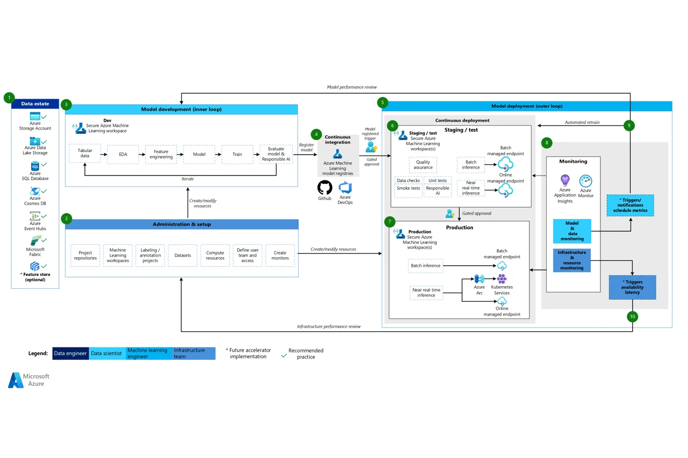
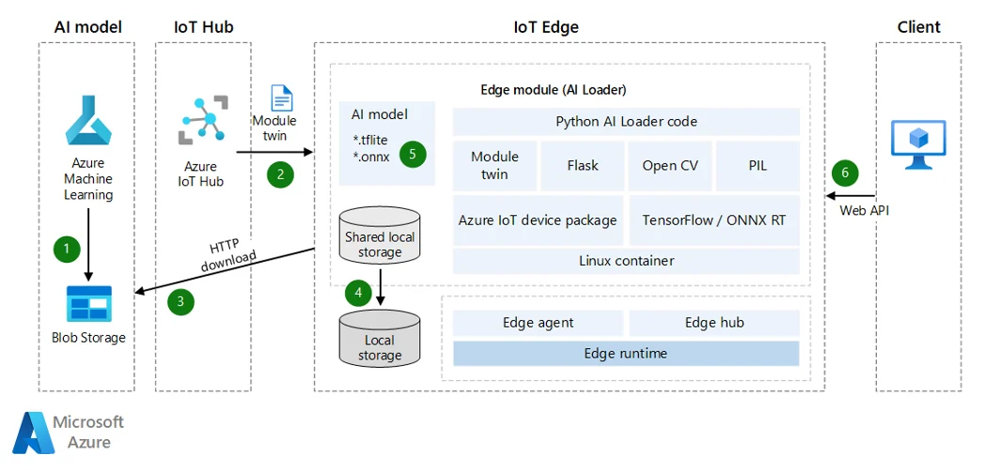
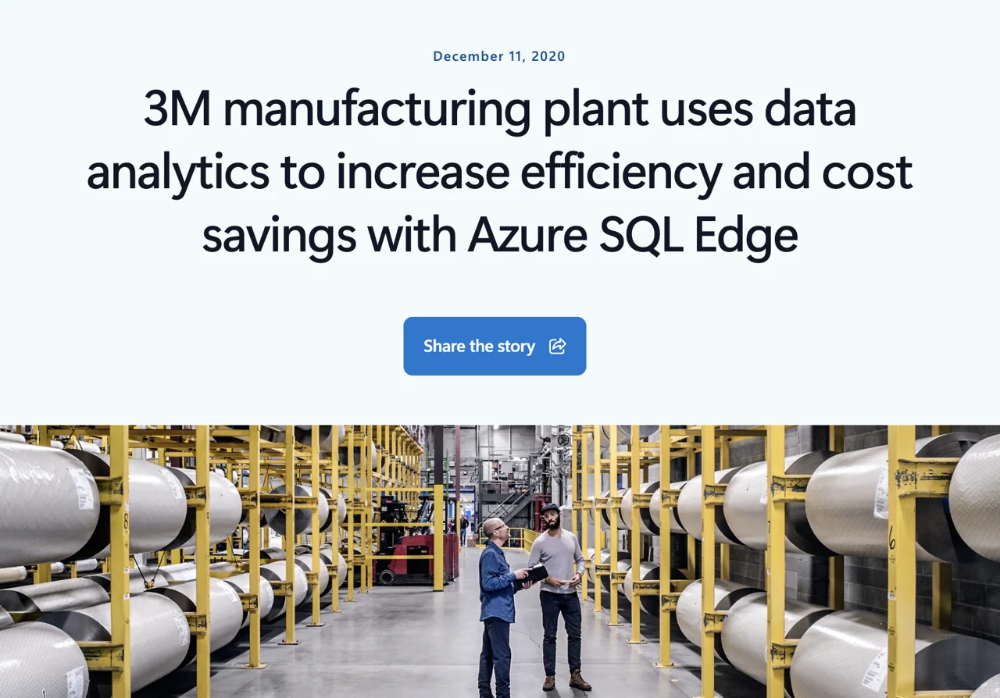
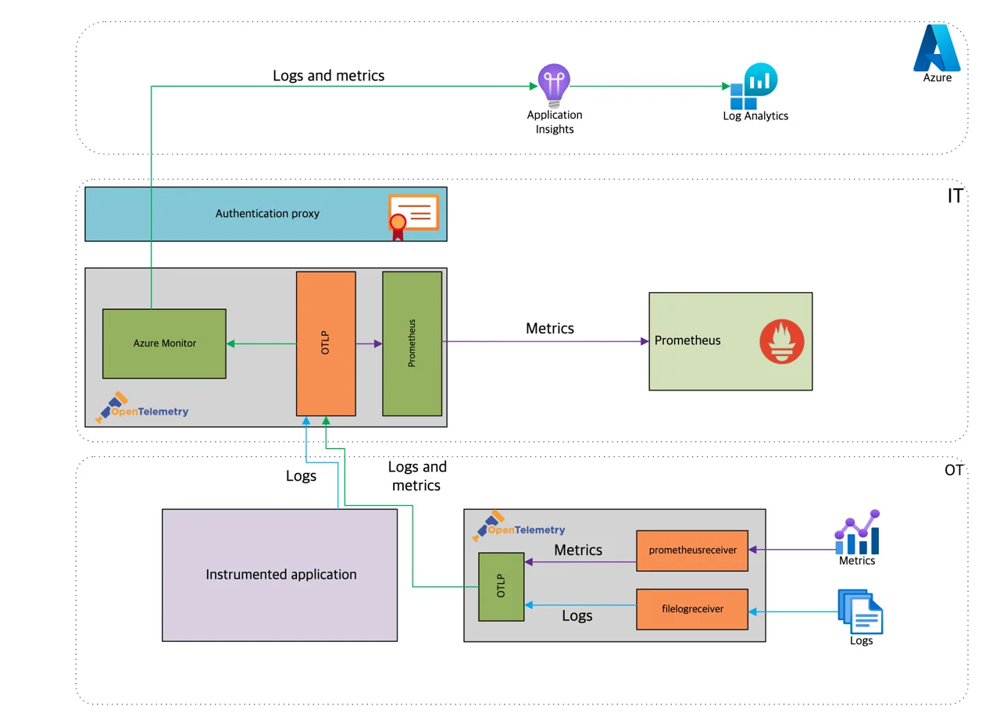

Edge-to-Cloud
MLOps Architecture
대규모 설비·센서 데이터의 안전한 클라우드 연동과
Closed-loop MLOps 플랫폼 구축 방안
Agenda
본 자료에서 다루는 6가지 핵심 영역
비즈니스 도전과제 & 아키텍처 개요
Edge 데이터의 클라우드 활용 시 필수 고려사항
Hybrid Reference Architecture
On-prem ↔ Azure Closed-loop MLOps 구성도
Azure Machine Learning & MLOps 소개
IoT Hub, Event Hubs, Data Box, ADF 등 비교
제조 Edge-to-Cloud Closed-loop 아키텍처
Private/Microsoft Peering, Global Reach
고객 사례 소개
P&G · 3M · Siemens 레퍼런스
MLOps CI/CD 및 도입 로드맵
Fabric, Databricks, CycleCloud, Azure ML
비즈니스 도전과제
왜 Edge-to-Cloud Hybrid 아키텍처가 필요한가
- 대용량 데이터 — 수천 개 설비/센서의 TB~PB급 시계열 데이터
- 연산 자원 한계 — Edge GPU/CPU로는 대규모 모델 Training 불가
- 데이터 사일로 — 공장·라인별 시스템 분산으로 통합 학습 어려움
- 폐쇄망 제약 — 보안·규제로 인한 인터넷 격리 환경
- 탄력적 연산 — GPU/HPC 클러스터로 대규모 Training 가속
- 통합 데이터 플랫폼 — 전사 데이터 레이크에서 단일 학습 셋 구성
- Closed-loop MLOps — Cloud 학습 → Edge 배포 → 재학습 자동화
- 엔터프라이즈 보안 — ExpressRoute Private Peering + Defender for Cloud
대용량 Edge 데이터의 클라우드 활용 = 단일 모델 학습 + 분산 추론
Hybrid Reference
Architecture
MLOps v2 Classical ML 아키텍처 · 레퍼런스 다이어그램 · Azure ML 중심 MLOps 흐름
Hybrid Reference Architecture
On-prem(Edge) ↔ Azure Closed-loop MLOps 구성도 — 현장은 실시간 추론·로컬 저장, 중요한 데이터만 선별 전송, 클라우드는 통합 학습 후 모델을 다시 Edge로 배포
flowchart LR
subgraph EDGE["🏭 On-premise / Edge (Factory)"]
direction TB
SEN["Sensors · PLC
SCADA · Vision"] --> IE["Azure IoT Edge
+ Azure Stack HCI"]
IE --> INF["Real-time Inference
Edge Model Registry"]
IE --> LS[("Local Storage
NAS · SAN · Object")]
ARC["Azure Arc-enabled
Servers / K8s"]
end
subgraph AZ["☁️ Azure Public Cloud"]
direction TB
ING["IoT Hub · Event Hubs
Stream Analytics · Fabric RTI"] --> LAKE[("ADLS Gen2 · OneLake
Blob · Files · NetApp")]
LAKE --> COMP["Fabric · Databricks
CycleCloud HPC"]
COMP --> AML["Azure ML · Training
Model Registry · MLflow"]
end
IE -- "ExpressRoute Private Peering" --> ING
LS -. "Data Box (Bulk)" .-> LAKE
AML == "Closed-loop: Deploy to Edge (Arc + IoT Edge)" ==> INF
SEC["🔐 Purview · Defender for Cloud · Entra ID · Key Vault"]
style EDGE fill:#0078d415,stroke:#0078d4,color:#eaf2fb
style AZ fill:#4aa3e015,stroke:#4aa3e0,color:#eaf2fb
style AML fill:#50e6ff22,stroke:#50e6ff,color:#eaf2fb
style INF fill:#14352a,stroke:#34d399,color:#eaf2fb
style SEC fill:#1f2937,stroke:#9ca3af,color:#eaf2fb
네트워크 설계 — Azure ExpressRoute
대규모 Edge 데이터 연동을 위한 전용회선 기반 Hybrid Connectivity
flowchart LR CN["🏭 Customer Network
Factory / DC
Servers · NAS/SAN · IoT"] --> CE["CE
Router"] CE --> PR["Provider / Meet-me
KT · LGU+ · SKB · Equinix
Megaport · Colt (또는 ER Direct)"] PR -- "BGP Peering · Active-Active (L3)" --> MSEE["Microsoft Edge
(MSEE)"] MSEE --> VN["Azure Region
VNet · Private Peering"] MSEE -. "MS Peering" .-> M365["M365 / SaaS"] style CN fill:#0078d422,stroke:#0078d4,color:#eaf2fb style MSEE fill:#4aa3e022,stroke:#4aa3e0,color:#eaf2fb style VN fill:#14352a,stroke:#34d399,color:#eaf2fb
- Provider 모델 — 통신사·교환국 경유, 50 Mbps ~ 10 Gbps · 국내외 통신사 다수
- ER Direct — Microsoft Edge에 직접 연동, 10/100 Gbps 포트, 대규모·금융·제조에 적합
- ER Metro — 동일 메트로 내 2개 Peering 위치를 통한 99.99% 가용성 옵션
ExpressRoute Peering 비교
Private Peering · Microsoft Peering 구분과 활용 시나리오
연결 대상
Azure VNet 내부 IaaS·PaaS 리소스 (Private IP) — IaaS VM, AKS, Storage Private Endpoint, SQL MI 등
주요 특성
- RFC1918 사설 IP 그대로 사용, NAT 불필요
- On-prem ↔ VNet 완전 사설 통신 (DC 확장 L3, S2S VPN 대체)
- Network Latency 5~30 ms (회선 거리 의존)
최적 시나리오
센서 데이터 적재, AML Training cluster 접근, VDI, ERP, 핵심 업무 트래픽
연결 대상
Microsoft Public Services (Public IP 기반) — Azure PaaS Public Endpoint
주요 특성
- Public IP / DNS 해석 필요, NAT 가능
- Route Filter로 서비스/리전 선택 적용
- 인터넷 우회로 M365 품질·보안 향상 (글로벌 prefixes 시 ER Premium)
최적 시나리오
Blob Public EP, Public API, M365/SaaS
ER 회선 1개에 Private Peering + (선택) Microsoft Peering을 동시에 활성화 → IaaS/PaaS 통신과 M365/SaaS 트래픽을 단일 회선으로 처리. Microsoft Peering 구성으로 Private Endpoint Inbound의 Hidden Cost 절감 가능.
글로벌 연결 — Global Reach & Virtual WAN
다국가 공장·법인을 Microsoft Global Backbone으로 연결
- 서로 다른 ER 회선(국가/리전)을 Global Backbone으로 직접 연결
- 한국 본사 ER ↔ 미국/유럽/중국 공장 ER을 풀메시 연결
- 트래픽이 인터넷 미경유 → 보안·지연·예측성 우수
- Hub-and-Spoke로 ER, VPN, SD-WAN, P2S 통합 관리
- Virtual Hub에 모든 회선 종단 → 라우팅 자동
- Azure Firewall / Routing Intent로 보안 일원화
+ ExpressRoute Global Reach
각 위치의 ER 회선이 Global Backbone에 종단 → 인터넷 우회 없이 각 Azure Region에 직접 도달
데이터 수집 전략 — 실시간 vs 배치
워크로드 특성에 따른 Azure 서비스 매트릭스
Use Case
실시간 이상 탐지 / Predictive QC · 설비 alarm·안전 트리거 · Streaming inference 로깅
주요 Azure 서비스
- Azure IoT Hub — 수백만 디바이스 양방향, MQTT/AMQP, X.509
- Azure IoT Edge — Edge gateway, 로컬 추론·필터링·압축
- Azure Event Hubs — 초당 수백만 이벤트, Kafka 호환
- Stream Analytics / Fabric RTI — SQL 기반 실시간 집계·라우팅
- Event Grid — 이벤트 라우팅·서버리스 트리거
특장점: Sub-second 지연 · 디바이스 ID/보안 · Kafka 친화
Use Case
과거 이력 데이터 대량 적재(TB~PB) · 일/주 단위 ETL/ELT · 학습용 골든 데이터셋 정기 갱신
주요 Azure 서비스
- Azure Data Box — 오프라인 PB급 전송 (Disk/40·80TB/Heavy)
- Azure Data Factory — 100+ 커넥터, Mapping Data Flow, IR On-prem
- AzCopy / Storage Mover — 고속 파일 복사, 증분/마이그레이션
- Storage Migration Service — Windows 파일서버 → Azure Files
- Azure Migrate (Database) — DB 호환성 평가 + 마이그레이션
특장점: 대용량 처리 · 스케줄링 · 검증·재시도 · 오프라인 옵션
Azure 데이터 마이그레이션 서비스 상세
워크로드 유형별 권장 서비스 선택 가이드
| 서비스 | 유형 | 적정 데이터량 | 지연 | 특장점 / Use Case |
|---|---|---|---|---|
| IoT Hub | 실시간 | 초~분당 수백만 msg | ms 수준 | 디바이스 ID·인증, Cloud-to-Device 명령, Module Twin |
| IoT Edge | 실시간 | Edge 로컬 처리 후 전송 | ms 수준 | 오프라인 동작, 로컬 추론 모듈, ML/Stream Analytics on Edge |
| Event Hubs | 실시간 | 수백만 events/sec | ms~수십ms | Kafka 호환, Capture로 ADLS 자동 적재 |
| Stream Analytics | 실시간 | 스트리밍 처리 | 초 단위 | SQL 기반 windowing/aggregation, Power BI 직결 |
| Fabric RTI | 실시간 | 수십 GB/일 ~ | 초 단위 | Eventstream + Eventhouse(KQL) 통합, OneLake 적재 |
| Azure Data Factory | 배치 | GB ~ PB | 분~시간 | 100+ 커넥터, ETL/ELT, CDC, Mapping Data Flow |
| Storage Mover | 배치 | TB ~ PB | 지속 동기화 | NFS/SMB → Azure Files/Blob 다중 작업 관리 |
| AzCopy | 배치 | MB ~ TB | 수동/스케줄 | CLI 고속 복사, 권장 단일 노드 도구 |
| Data Box (Disk/80TB/Heavy) | 오프라인 | 수 TB ~ 1 PB+ | 수일 | 폐쇄망/저대역망, AES-256 암호화, PB급 일괄 |
| Azure Migrate / DMS | 배치(DB) | DB 수십 ~ TB | 분~시간 | SQL/Oracle/MySQL 평가·이전, 다운타임 최소화 |
스토리지 매핑 — On-prem ↔ Azure
기존 스토리지 유형별 권장 Azure 서비스 및 통합 옵션
| On-prem 유형 | 예시 | 권장 Azure 서비스 | 적정 워크로드 | 특장점 |
|---|---|---|---|---|
| NAS (Files) | NetApp, Isilon, Windows FS | Azure NetApp Files / Files | 공유 파일, AI 학습 dataset | 엔터프라이즈 성능·SnapMirror, SMB Lift&Shift |
| SAN (Block) | Pure, EMC, NetApp SAN | Managed Disks / Elastic SAN | DB, VM 부트/데이터, Tier1 | Premium SSD v2, Ultra Disk, 다중 호스트 공유 |
| Object Storage | MinIO, Ceph, S3-호환 | Blob Storage (ADLS Gen2) | Data Lake, 백업, 로그 | Hot/Cool/Cold/Archive, Lifecycle, HNS, AzCopy |
| Backup / Archive | Tape, VTL, Veeam Repo | Blob Archive / Azure Backup | 장기보관, 컴플라이언스 | ~1¢/GB, Immutable, Veeam·Commvault 연동 |
| HPC Parallel FS | Lustre, GPFS, BeeGFS | Managed Lustre / ANF | AI Training, CAE/CFD | AML/CycleCloud 직결, sub-ms 병렬 IO |
| File Server (Win) | Windows File Server | Azure Files + File Sync | 공유 폴더, 부서 파일 | 캐시·클라우드 티어링, AD 통합 |
| DB Storage | SQL/Oracle on SAN | SQL MI / PostgreSQL Flex | 트랜잭션, OLTP/OLAP | Azure Migrate/DMS, Online migration, Hyperscale |
| Streaming / Time-series | Kafka, Historian | Event Hubs + Fabric Eventhouse | 시계열 IoT, 실시간 분석 | Kafka 호환, KQL 분석, OneLake 적재 |
데이터 분석 & 시뮬레이션 플랫폼
시나리오별 Azure 데이터/AI 서비스 포지셔닝
▣ Microsoft Fabric
SaaS 통합 분석 플랫폼 — OneLake 단일 저장소 위에서 Data Engineering, Warehouse, Real-Time Intelligence, Power BI, Data Science 통합
Use case · 전사 레이크하우스, BI, 시계열 IoT 분석(RTI), Copilot 분석
▣ Azure Databricks
Lakehouse + 협업 노트북, Mosaic AI · MLflow 내장. 대규모 ETL, ML 학습/서빙, GenAI 미세조정에 최적
Use case · 수십~수백 TB ETL, ML/DL Training, Feature Store, LLM 파인튜닝
▣ Azure CycleCloud + HPC
HPC 클러스터 오케스트레이션 — Slurm/PBS/LSF, ND/HBv GPU/CPU, InfiniBand. CAE/CFD/EDA 시뮬레이션과 대규모 분산 학습
Use case · 제품 시뮬레이션(유동/구조/충돌), 신약 분자 시뮬, 분산 AI Training
▣ Azure Machine Learning
엔드투엔드 ML 라이프사이클 — AutoML, Designer, Pipelines, Endpoints, Responsible AI, Prompt Flow
Use case · 학습/배포/모니터링 표준화, MLOps, Edge용 모델 패키징
▣ Azure AI Foundry
Generative AI 앱 개발 플랫폼 — Model Catalog, Agent Service, Evaluation, Content Safety. Use case · 제조 도메인 코파일럿, 시각/언어 멀티모달, Edge SLM 배포
End-to-End MLOps 운영 스택
Cloud Training ↔ Edge Inference 의 운영 컴포넌트
ADLS Gen2 · OneLake · Blob · NetApp Files · Purview Catalog
Azure ML Compute (NDv5, ND H100) · Databricks · CycleCloud Slurm · Managed Lustre
Azure ML Pipelines · MLflow Registry · GitHub Actions · Prompt Flow · Responsible AI
Azure Arc · IoT Edge · AKS Edge Essentials · Azure Stack HCI · Defender for IoT
- Training은 Azure ML Pipeline + AML Compute(ND H100) 또는 CycleCloud HPC로 자동 스케줄 (Spot/Low-priority로 비용 절감)
- Model Registry → Approval Gate → Container Image Build → Edge Module 배포까지 GitHub Actions/Azure DevOps로 일원화
- Edge Inference 모니터링은 Azure Monitor + Log Analytics + Prometheus, Drift는 AML Data Drift Detector로 자동 트리거
Azure Machine Learning
& MLOps 소개
MLOps v2 Classical ML 아키텍처 · 레퍼런스 다이어그램 · Azure ML 중심 MLOps 흐름
Azure Machine Learning
데이터 준비(Storage·DB·Fabric) → Azure ML (MLOps 9단계) → 배포·운영(Managed Endpoint·Arc·IoT Edge). 제조뿐 아니라 어떤 산업의 ML 프로젝트에도 동일하게 적용되는 일반 패턴
Storage(ADLS·Blob) · DB(SQL·Cosmos) · Fabric(OneLake·Feature Store)
MLOps Workspace · 9단계 파이프라인
Managed Endpoint · Arc K8s · IoT Edge
↻ 추론 로그·Drift 감지 → 재학습 트리거 → 학습 파이프라인 재실행 → 재배포
데이터 등록 · 버전/계보(Lineage) · Datastore 연결
정제 · 결측/이상치 · Feature 생성
분산 학습 · AutoML · HPO 튜닝
메트릭·파라미터·아티팩트 (MLflow)
성능 검증 · 책임있는 AI · 승인 게이트
카탈로그 등록 · 스테이징→프로덕션
컨테이너 이미지 · 환경·종속성
데이터/모델 드리프트 · 품질 지표
드리프트 트리거 재학습 → 재배포
Azure ML & MLOps 레퍼런스 아키텍처
Microsoft 공식 MLOps v2 표준 — Inner Loop(모델 개발) → CI → CD(Staging→승인→Production) → Monitoring → 재학습. ML 프로젝트의 표준 운영 매뉴얼
flowchart LR
DE[("Data estate
ADLS Gen2 · SQL · Cosmos
Event Hubs · Fabric · Feature store")]
DE --> IL
subgraph IL["① Model development · Inner Loop"]
direction LR
EDA["EDA"] --> FE["Feature eng"] --> TR["Train"] --> EV["Evaluate ·
Responsible AI"] --> RG["Register model"]
RG -. "↻ Iterate" .-> EDA
end
IL --> CI["② Continuous Integration
build · test · model registration"]
CI --> CD
subgraph CD["③ Continuous Deployment · Outer Loop"]
direction LR
ST["Staging / Test
QA · Smoke · RAI"] --> GA{"Gated
approval"} --> PR["Production
Batch / Real-time · Arc / K8s"]
end
CD --> MON["④ Monitoring
App Insights · Azure Monitor
Model & data drift · Triggers"]
MON == "재학습 (Retrain)" ==> IL
style IL fill:#4aa3e015,stroke:#4aa3e0,color:#eaf2fb
style CD fill:#0078d415,stroke:#0078d4,color:#eaf2fb
style MON fill:#14352a,stroke:#34d399,color:#eaf2fb
style GA fill:#50e6ff22,stroke:#50e6ff,color:#eaf2fb
Reference: learn.microsoft.com/azure/architecture/ai-ml/guide/machine-learning-operations-v2 (Classical ML)
MLOps 레퍼런스 — Azure 서비스 매핑
앞의 표준 아키텍처를 Azure 서비스 관점으로 풀어낸 그림 — 데이터 저장소부터 모델 개발, CI/CD, 운영 배포, 모니터링, 재학습까지 역할 기준으로 연결

학습·추론 데이터가 모이는 영역 — Storage·SQL·Event Hubs·Fabric
Secure AML Workspace에서 EDA·Feature·학습·평가·등록
승인 게이트 후 Arc/K8s·Managed Endpoint 배포·모니터링·재학습
제조 Edge-to-Cloud
Closed-loop MLOps 아키텍처
Closed-loop 흐름 · Azure IoT Edge 디바이스 추론 — ① Edge 데이터 수집과 ② 온프레미스 모델 배포·운영에 집중
Closed-loop MLOps Pipeline
Cloud Training ↔ Edge Inference 의 지속적 재학습 루프 — 특히 굵게 표시된 ①·②·⑥ 단계가 제조 현장의 핵심
flowchart LR E1["★ ① Edge Data 수집
센서/설비 raw + 추론 결과 로깅"] E2["★ ② Cloud Ingestion
IoT Hub / Event Hubs → Lake"] E3["③ Feature 정제·Labeling
Fabric / Databricks"] E4["④ Model Training
Azure ML / CycleCloud HPC"] E5["⑤ Model Registry & 검증
MLflow · A/B · Shadow · RAI"] E6["★ ⑥ Edge 배포 & 재학습 트리거
Arc + IoT Edge OTA · Drift 감지"] E1 --> E2 --> E3 --> E4 --> E5 --> E6 E6 == "Closed-loop Feedback · Drift → 재학습" ==> E1 style E1 fill:#50e6ff22,stroke:#50e6ff,color:#eaf2fb style E2 fill:#50e6ff22,stroke:#50e6ff,color:#eaf2fb style E6 fill:#14352a,stroke:#34d399,color:#eaf2fb
Azure ML Pipelines + GitHub Actions로 코드/데이터/모델 변화 시 자동 학습·배포
성능 메트릭, Data Drift, Fairness, Bias 자동 검증 후에만 Prod 승격
Azure Arc로 글로벌 공장 K8s/서버 통합 관리, IoT Edge로 모듈 OTA 업데이트
제조 Edge-to-Cloud Closed-loop MLOps 아키텍처
현장 수집 → 클라우드 수집·메달리온 레이크 → Azure ML 학습·추론 → Edge 배포 → 피드백 재학습의 전체 흐름
flowchart LR
subgraph L1["① 온프레미스 제조 Edge"]
direction TB
SRC["PLC · 센서 · 카메라 · MES"] --> GW["엣지 게이트웨이
filtering / windowing
Store-and-forward"]
GW --> EINF["실시간 Edge Inference"]
end
subgraph L2["② 클라우드 수집 · 데이터 플랫폼"]
direction TB
ING2["Azure IoT Hub · Event Hubs"] --> MED[("ADLS Gen2 · System of Record
🥉 Bronze raw → 🥈 Silver 정제 → 🥇 Gold 학습셋")]
MED -. "Shortcut" .-> FAB["Fabric OneLake
분석 · Power BI (Optional)"]
end
subgraph L3["③ Azure ML / MLOps 추론"]
direction TB
AMLW["Azure ML Workspace
학습·평가·등록 · MLflow"] --> PKG["Deployment Package"]
end
subgraph L4["④ 배포 · 추론 · 피드백"]
direction TB
ARC2["Azure Arc K8s · IoT Edge Module"] --> OPS["이상탐지 · 품질예측
예지보전 · 설비 상태"]
end
GW -- "중요 데이터 선별" --> ING2
MED --> AMLW
PKG == "OTA 배포" ==> ARC2
OPS == "추론 로그 · 작업자 피드백 · Drift → 재학습" ==> AMLW
style L1 fill:#0078d415,stroke:#0078d4,color:#eaf2fb
style L2 fill:#4aa3e015,stroke:#4aa3e0,color:#eaf2fb
style L3 fill:#50e6ff15,stroke:#50e6ff,color:#eaf2fb
style L4 fill:#14352a,stroke:#34d399,color:#eaf2fb
Azure IoT Edge 디바이스에서의 ML 추론
Azure ML 학습·저장 → IoT Hub Module Twin 배포 구성 → 모델 파일 Edge 다운로드 → Edge 모듈 로컬 추론(Web API)

- Azure ML → Blob — 모델 학습 후 모델 파일 저장
- IoT Hub → Module Twin — Edge 모듈에 배포 구성(모델 메타) 전달
- HTTP 다운로드 — Blob → 공유 로컬 스토리지로 모델 내려받기
- 공유 → 모듈 로컬 — AI Loader 모듈 저장소로 복사
- 모델 파일 로드 — *.tflite · *.onnx 를 Edge 모듈에 로드
- Client → Web API — 현장 추론 요청·응답 (로컬 엔드포인트)
Reference: learn.microsoft.com/azure/architecture/guide/iot/machine-learning-inference-iot-edge
고객 사례 소개
P&G · 3M · Siemens — 실제 제조 현장의 Edge-to-Cloud MLOps 레퍼런스
CASE 01 · Procter & Gamble
전 세계 35개국 이상의 공장에서 신규·노후 장비가 혼재 — IT/OT 데이터 표준화와 일관된 모델 배포가 과제. Azure IoT Operations + Azure Arc로 현장 수집 → 클라우드 분석 → 예측 모델 Edge 재배포 구조를 구축
P&G — Azure IoT Operations + Azure Arc Closed-loop
목적: OEE 향상 · 비계획 다운타임 감소 — IT/OT 표준화 → 클라우드 예측 모델 → Azure Arc로 Edge 재배포
Arc K8s · MQTT 브로커 · IT/OT 표준 수집 (35개국 공장)
현장 라인 옆에서 즉시 추론
전사 적재 · 예측·처방 분석
예측·처방 모델 · K8s 네이티브 학습
모델 빌드·배포 · 사이트별 버전 관리
→ ② Edge 추론으로 환류
↻ Closed-loop — ② Edge 추론 ↔ ③ 클라우드 학습 ↔ ⑥ Edge 재배포가 자동 순환
IT/OT 경계의 데이터 표준화를 Azure IoT Operations로 해소 · Azure Arc + Workload Orchestration으로 사이트별 모델 배포·버전 관리 → 비계획 설비 정지 대폭 감소
Reference: microsoft.com/en/customers/story/25077-procter-and-gamble-iot-operations
CASE 02 · Edge 우선 분석·추론
제조 이상 징후 예측을 위해 분석을 제조 라인 가까이에서 수행 — 클라우드 학습 + 라인 옆 Azure IoT Edge 추론. Azure SQL Edge가 IoT Edge 모듈로 배포되어 현장에서 저장·처리·예측

3M — Azure IoT Edge + Azure SQL Edge 모델 배포
목적: 설비 고장을 수 시간 전 예측 · 예지보전 — 설비 센서 + 제품 정보 상관분석 → Edge 저장·추론 → 클라우드 동기화 학습
2-스트림 상관분석
라인 옆에서 저장·처리
고장을 수 시간 전 예측
전송 시간 주 → 분 단축
ML Services · 예측 모델 고도화
→ ② Edge 저장으로 환류
↻ Closed-loop — Edge 분석·예측 ↔ 클라우드 재학습 ↔ Edge 재배포가 자동 순환
Edge-first 설계로 네트워크 제한 현장에서도 로컬 저장·추론 → 설비 센서·제품 정보 상관분석으로 이상 징후 조기 포착 → 클라우드(Azure ML · Databricks) 재학습 → Edge 재배포로 예지보전·다운타임 절감
Reference: microsoft.com/en/customers/story/844496-3m-manufacturing-azure-sql-edge
Siemens Industrial Edge + Azure AI 레퍼런스
Microsoft & Siemens 공식 레퍼런스 — Azure ML 학습·패키징 → IoT Hub → Siemens AI Model Manager · Industrial Edge · AI Inference Server → 모니터링·환류


Reference: learn.microsoft.com/azure/architecture/example-scenario/manufacturing/azure-ai-siemens-industrial-edge
Closed-loop MLOps 적용 사례
Azure 기반 Edge-to-Cloud MLOps 실제 도입 사례
ZF Group
Solution · IoT Hub 수집, Azure ML 예지보전 모델 학습 → IoT Edge 배포
Outcome · 설비 다운타임 감소, 글로벌 50+ 공장 표준화
Bosch
Solution · Databricks + Azure ML 분석 플랫폼, Bosch IoT Suite 통합
Outcome · 수만 디바이스 품질·에너지 분석, 디지털 서비스 가속
Schneider Electric
Solution · EcoStruxure가 Azure IoT + AI에서 실행, Edge 실시간 인사이트
Outcome · 에너지 효율화·예지보전 SaaS 제공
PepsiCo
Solution · Frito-Lay 공장 Azure IoT + ML, 비전 AI 감자 품질 검사 + 재학습 루프
Outcome · 수율 개선, 생산라인 운영 시간 확보
Heineken
Solution · Azure 기반 Brewing Operations 플랫폼, 양조 공정 데이터 통합 → AI 의사결정
Outcome · 품질 일관성·에너지 효율, 글로벌 양조장 표준화
AGL · TotalEnergies · ABB
Solution · OT 데이터 → ADLS Gen2 → Synapse/Fabric 분석, Azure ML 운영 최적화
Outcome · 에너지 효율·안전성 향상, 운영 KPI 가시화
출처: Microsoft Customer Stories · 사례별 솔루션 구성 요약 (공개 정보 기반)
MLOps CI/CD & 거버넌스
GitHub Actions 기반 MLOps 자동화 · 보안/거버넌스 · 단계별 도입 로드맵
MLOps CI/CD — GitHub Actions Closed-loop
코드·데이터 변경 → 자동 학습·검증 → Azure ML / Edge 배포 → 운영 모니터링 → 드리프트 감지 시 재학습 트리거
GitHub Repository
ML 코드 · 파이프라인 정의 · 환경/데이터 config (Git 버전 관리)
GitHub Actions · 학습
lint·test → 환경/데이터셋/컴퓨트 등록 → 학습 파이프라인 실행 · 모델 등록
GitHub Actions · 배포
모델 검증·승인 게이트 → Online Endpoint / IoT Edge 모듈 배포
Azure ML · Edge Runtime
실시간/배치 추론 · Azure Monitor 텔레메트리 · 데이터 드리프트 감지
flowchart LR G["GitHub Repo
코드·config"] --> CI["Actions CI
학습·등록"] CI --> CD["Actions CD
검증·배포"] CD --> RT["Azure ML / Edge
추론 서빙"] RT --> MON["Azure Monitor
드리프트 감지"] MON == "재학습 트리거" ==> CI style CI fill:#4aa3e022,stroke:#4aa3e0,color:#eaf2fb style CD fill:#0078d422,stroke:#0078d4,color:#eaf2fb style MON fill:#14352a,stroke:#34d399,color:#eaf2fb
GitHub Actions MLOps 워크플로 (실전 예시)
Azure/mlops-v2-gha-demo — NYC Taxi 회귀 예제 · workflow_dispatch로 트리거되는 엔드투엔드 학습 파이프라인
flowchart TB T["workflow_dispatch
수동/이벤트 트리거"] --> ENV["set-env
환경변수·시크릿 로드"] ENV --> CFG["get-config
config-infra YAML 파싱"] CFG --> RE["register-environment"] CFG --> RD["register-dataset"] CFG --> RC["create-compute"] RE --> RUN["run-training-pipeline
Azure ML Job 제출"] RD --> RUN RC --> RUN RUN --> REG["모델 등록"] style T fill:#4aa3e022,stroke:#4aa3e0,color:#eaf2fb style RUN fill:#0078d422,stroke:#0078d4,color:#eaf2fb style REG fill:#14352a,stroke:#34d399,color:#eaf2fb

Reference: github.com/Azure/mlops-v2-gha-demo · MLOps v2 가속기 GitHub Actions 데모
보안·거버넌스 & 단계별 도입 로드맵
Zero Trust 다계층 보안 + 4~6주 단위로 가치를 검증하며 확장하는 5단계 도입 경로
- Identity · Microsoft Entra ID · Managed Identity · RBAC 최소권한
- Network · Private Endpoint · VNet 격리 · ExpressRoute Private Peering
- Data · 저장/전송 암호화 · Key Vault · Purview 데이터 거버넌스
- Workload · Defender for Cloud · 정책(Policy)·규정 준수
- OT/Edge · Defender for IoT · Arc 거버넌스 · 디바이스 인증
- ① Connectivity · ExpressRoute·vWAN 하이브리드 연결 (4~6주)
- ② Data Ingestion · 실시간·배치 수집 파이프라인 (6~8주)
- ③ Analytics & Pilot · 데이터 플랫폼 + 첫 모델 PoC (8~12주)
- ④ MLOps & Edge · CI/CD 자동화 + Edge 배포 (8~10주)
- ⑤ Scale · 전사 확장·Closed-loop 운영 (지속)
작게 시작해 단계마다 가치를 검증하고 확장 — Land & Expand
핵심 정리
① Hybrid 는 선택이 아닌 필수
데이터 중력·지연·규제 때문에 Edge-to-Cloud 하이브리드가 제조 AI의 기본 전제
② 실시간·배치 이원화
스트리밍(IoT Hub·Event Hubs)과 배치(Data Factory)를 용도에 맞게 분리 설계
③ ExpressRoute Private + Microsoft Peering
안정적·보안된 하이브리드 연결의 핵심 — 트래픽 유형별 피어링 선택
④ 통합 데이터 플랫폼
ADLS Gen2 · Synapse/Fabric · Databricks로 분석·학습 데이터 일원화
⑤ Closed-loop MLOps 로 완성
현장 추론 → 클라우드 재학습 → Edge 재배포의 자동 순환이 지속적 가치 창출의 엔진 (P&G·3M·Siemens 검증)
Thank you · Microsoft Korea